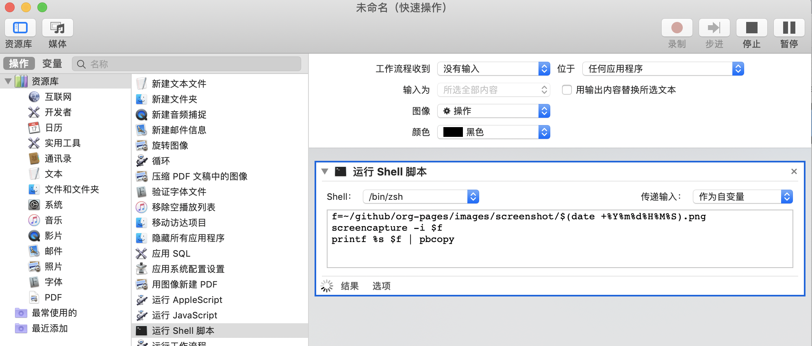
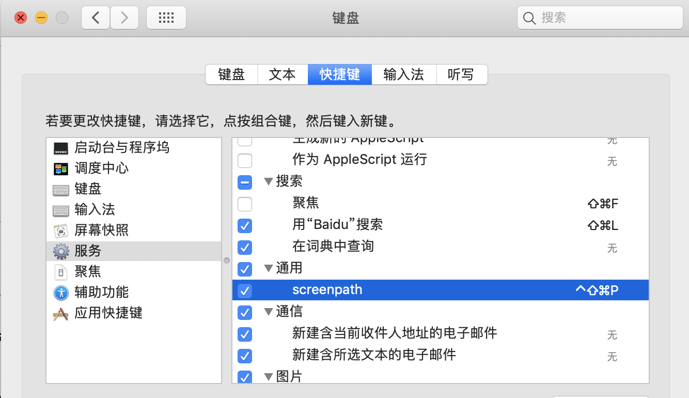

Question & Answer
Table of Contents
- 1. Question & Answer
- 1.1. DONE telegram install for android and iphone
- 1.2. TODO 查找收集新闻订阅源
- 1.3. DONE emacs快速创建python文件模板
- 1.4. DONE 添加org mode habit 配置
- 1.5. DONE emacs set mpv play video
- 1.6. DONE emacs 代码折叠
- 1.7. DONE bt sync
- 1.8. DONE create telegram group
- 1.9. TODO emacs mgit use
- 1.10. DONE how to talk with irc in emacs
- 1.11. DONE virtualenv set different python
- 1.12. UNDO how to use youdao translation in emacs
- 1.13. DONE how to use emacs to program python
- 1.14. TODO 2019年度计划
- 1.15. DONE how to hook pomodoro
- 1.16. DONE emacs org-pomodoro install
- 1.17. DONE mac sock to http proxy
- 1.18. DONE learn more form emacs itself
- 1.19. DONE emacs 截图
- 1.20. DONE emacs 使用 mpd /mpc 听音乐
- 1.21. DONE arch 系统剪切板调用
- 1.22. DONE arch 安装teamviewer
- 1.23. DONE emacs快速注释快捷键
- 1.24. DONE emacs指定模板创建文件
- 1.25. DONE emacs配置做软链到工作目录
- 1.26. DONE 如何使用emms看视频？
- 1.27. DONE emacs如何处理博文头部尾部嵌套跳转页问题
- 1.28. TODO 推荐系统引擎 apache mahout
- 1.29. TODO org-mode 导出中文pdf文件
- 1.30. DONE 如何publish的时候直接push html到发布分支?
- 1.31. DONE org-mode capture倒序添加新的task
- 1.32. DONE org-mode table中英文对齐问题
- 1.33. DONE 连接远程主机emacs alt键失灵问题
- 1.34. DONE 远程开发代码备份与调用远程开发环境
- 1.35. DONE emacs数据恢复问题
- 1.36. DONE github git push 一直无响应
- 1.37. DONE ssh Permission denied (publickey)
- 1.38. DONE arch下载百度云大文件
- 1.39. DONE emacs快速调用chrome或者emacs-w3m打开链接
- 1.40. DONE org-mode 自动显示图片
- 1.41. DONE 不重启emacs如何重新加载配置
- 1.42. DONE rabbitmq队列数据量堆积过多，服务不正常问题解决?
- 1.43. DONE arch install yaourt
1 Question & Answer
1.1 DONE telegram install for android and iphone
- State "DONE" from "TODO"
SCHEDULED:
1.2 TODO 查找收集新闻订阅源
SCHEDULED:
1.3 DONE emacs快速创建python文件模板
State "DONE" from "TODO"
利用yasnippet创建快捷输入，有时候会比较灵活,不需要一些定制模板yas-new-snippet 创建模板
c-c c-c 保存
SCHEDULED:
1.4 DONE 添加org mode habit 配置
- State "DONE" from "TODO"
SCHEDULED:
("h" "Habit" entry (file "~/github/org-pages/habit.org") "* TODO %?\nSCHEDULED: <%<%Y-%m-%d %a .+1d>>\n:PROPETIES:\n:CREATED: %U\n:STYLE: habit\n:REPEAT_TO_STATE: TODO\n:LOGGING: DONE(!)\n:ARCHIVE: %%s_archive::* Habits\n:END:\n%U\n" :empty-lines 1 :prepend t)https://orgmode.org/manual/Tracking-your-habits.html#Tracking-your-habits
1.5 DONE emacs set mpv play video
- State "DONE" from "TODO"
SCHEDULED:
配合调整透明度 查看视频记录笔记
mpd 使用文档与快捷键可以查看文档
https://mpv.io/manual/master/#description
[ and ]
Decrease/increase current playback speed by 10%.
{ and }
Halve/double current playback speed.
BACKSPACE
Reset playback speed to normal.
m
Mute sound.
1.6 DONE emacs 代码折叠
- State "DONE" from "TODO"
SCHEDULED:
hs-show-all:显示所有的代码
hs-hide-all:折叠所有的代码
hs-show-block:显示当前代码区
hs-hide-block:折叠当前代码区
hs-toggle-hiding: 折叠/显示当前代码区 (spc hs)
代码折叠，其实完全可以使用 M-x
helm-imenu替代helm-imenu (spc hi)
1.7 DONE bt sync
- State "DONE" from "TODO"
DEADLINE:
https://program-think.blogspot.com/2017/08/GFW-Resilio-Sync.html
节点发现
- Tracker Server（追踪服务器）
- DHT 网络
- Predefined Hosts
Resilio Sync 国内使用
proxifiter 代理能够访问一下两个节点：
target host :
173.244.217.42
209.95.56.60
1.8 DONE create telegram group
- State "DONE" from "TODO"
DEADLINE:
telegram 代理支持
socks5
shadowrocket 127.0.0.1:1082
MTproto 官方提供很多 :
自建mtproto: https://github.com/TelegramMessenger/MTProxy
proxy sponsor how to set ?
1.9 TODO emacs mgit use
DEADLINE:
1.10 DONE how to talk with irc in emacs
State "DONE" from "TODO"
https://emacs-china.org/t/erc/2366
erc
init-erc.el
gnutls
DEADLINE:
1.11 DONE virtualenv set different python
- State "DONE" from "TODO"
DEADLINE:
sudo pip install virtualenv
mkdir ~/opt/virtualenvs
virtualenv –python=/usr/bin/python2.6 ~/opt/virtualenvs/emacs-python
cd ~/opt/virtualenvs/emacs-python/bin
source activate // deactivate
alias emacs-python-enable='source ~/opt/virtualenvs/emacs-python/bin/activate'
1.12 UNDO how to use youdao translation in emacs
- State "UNDO" from "TODO"
1.13 DONE how to use emacs to program python
- State "DONE" from "TODO"
https://wdicc.com/emacs-as-python-ide/
elpy
pip install jedi flake8 autopep8
静态代码检测:
Flake8 是由Python官方发布的一款辅助检测Python代码是否规范的工具
格式化代码
YAPF (Yet Another Python Formatter)是Google开源的一个用来格式化Python代码的工具.
支持2种代码规范 (PEP8 Google style)
Black，号称不妥协的代码格式化工具，因为它检测到不符合规范的代码风格直接就帮你全部格式化好，
根本不需要你确定，直接替你做好决定
M-x elpy-config
https://github.com/jorgenschaefer/elpy/wiki/Configuration
pip install yapf
M-x elpy-format-code (, r f)
(when (require 'elpy nil t) (elpy-enable) (pyvenv-activate "~/opt/virtualenvs/emacs-python") ) (defun goto-def-or-rgrep () "Go to definition of thing at point or do an rgrep in project if that fails" (interactive) (condition-case nil (elpy-goto-definition) (error (elpy-rgrep-symbol (thing-at-point 'symbol))))) (define-key elpy-mode-map (kbd "M-.") 'goto-def-or-rgrep) (add-hook 'python-mode-hook 'jedi:setup) (setq jedi:complete-on-dot t) ; optionalHow do use Emacs to look up a function in Python?
M-.like pycharm
c-c c-delpy-doc 查看函数文档##videos must be used with an image..so when image is clicked video starts [[link of the video][link of the image]
1.14 TODO 2019年度计划
- 每月坚持读完一本技术书籍,每天都要读书
- 每周坚持锻炼一次,早睡早起,避免过劳死
- 每周听一个专辑,看两部电影,同步更新sync
- 每月抽出时间出去游玩一次
1.15 DONE how to hook pomodoro
- State "DONE" from "TODO"
(require 'pomodoro) (eval-after-load 'pomodoro '(progn (setq pomodoro-break-time 2) (setq pomodoro-long-break-time 5) (setq pomodoro-work-time 25) (pomodoro-add-to-mode-line) (setq-default mode-line-frmat (cons '(pomodoro-mode-line-string pomodoro-mode-line-string) mode-line-format))))M-x customize-group config
/usr/bin/afplay game_win.wav path在
pomodoro.el中修改pomodoro-start和pomodoro-stop函数 添加(play-pomodoro-work-sound) (play-pomodoro-break-sound)临时修改了原函数,lisp如何hook?
1.16 DONE emacs org-pomodoro install
- State "DONE" from "TODO"
org-pomodoro 过于臃肿，喜欢满足基本功能的pomodoro，我只需要定时+播放提示音乐功能
1.17 DONE mac sock to http proxy
- State "DONE" from "TODO"
You can install it with brew:
brew install polipoAnd open a config file:vim ~/.poliporc Fill it with the content:
# your SOCKS local port socksParentProxy = 127.0.0.1:1080 socksProxyType = socks5 # default port is 8123 proxyAddress = '::0' proxyPort = 8888Start polipo with polipo -c ~/.poliporc and now polipo established a http proxy based on your socks5 proxy.
后来发现shadowsocks自动开启了，socks5和http代理 伪需求了
1.18 DONE learn more form emacs itself
- State "DONE" from "TODO"
c-h c-f:: find-function
c-h c-v:: find-variables
c-h c-k:: find-function-no-key(global-set-key (kdb "C-h C-f") 'find-function) (global-set-key (kdb "C-h C-v") 'find-variable) (global-set-key (kdb "C-h C-k") 'find-function-on-key)
M-x info学习emacs技巧
1.19 DONE emacs 截图
- State "DONE" from "TODO"
http://blog.binchen.org/posts/how-to-take-screen-shot-for-business-people-efficiently-in-emacs.html
参考陈斌的思路，mac上创建截图后，复制绝对路径到剪切板,然后调用elisp函数读取粘贴板写入org-mode文件内
(defun my-gclip () (local-require 'simpleclip) (cond (simpleclip-works (simpleclip-get-contents)) ((eq system-type 'darwin) (with-output-to-string (with-current-buffer standard-output (call-process "/usr/bin/pbpaste" nil t nil "-Prefer" "txt")))) ((eq system-type 'cygwin) (with-output-to-string (with-current-buffer standard-output (call-process "getclip" nil t nil)))) ((memq system-type '(gnu gnu/linux gnu/kfreebsd)) (let* ((powershell-program (executable-find "powershell.exe"))) (cond (powershell-program ;; PowerLine adds extra white space character at the end of text (s-trim-right (with-output-to-string (with-current-buffer standard-output (call-process powershell-program nil t nil "-command" "Get-Clipboard"))))) (t (with-output-to-string (with-current-buffer standard-output (call-process "xsel" nil t nil "--clipboard" "--output"))))))))) (defun insert-file-link-from-clipboard () "Make sure the full path of file exist in clipboard. This command will convert full path into relative path. Then insert it as a local file link in `org-mode'." (interactive) (insert "#+ATTR_HTML: :width 30% :height 30% \n") (insert (format "[[file:%s]]" (file-relative-name (my-gclip)))))mac 截图复制绝对路径到剪切板
https://apple.stackexchange.com/questions/115999/take-screenshot-and-copy-its-file-path-to-clipboard
f=~/Desktop/$(date +%Y%m%d%H%M%S).png && screencapture -i $f && printf %s $f | pbcopy使用Automator创建workflow service
f=~/github/org-pages/images/screenshot/$(date +%Y%m%d%H%M%S).png screencapture -i $f osascript -e 'set the clipboard to POSIX file "'$f'"'
Then give the service a keyboard shortcut from System Preferences
ctrl + shift + command + p
1.20 DONE emacs 使用 mpd /mpc 听音乐
- State "DONE" from "TODO"
install mpd ::
https://computingforgeeks.com/install-configure-mpd-ncmpcpp-macos/
Start mpd service using the command:
$ mpdMpd process can be killed by running the command.
$ mpd --killTo update mpd, execute the command,
$ mpd updateinstall mpc-client ::
brew install mpc
mpc search any taylor | mpc add taylor-1989
mpc helpmpc command keywords ::
mpc的常用参数：
mpc add 添加歌曲到播放列表
mpc listall|mpc add 可以把所有歌曲都添加到当前的播放列表
mpc listall 可以列出所有的歌曲
mpc playlist 查看当前播放列表
mpc 查看当前播放歌曲的信息
mpc play 播放
mpc pause 暂停
mpc stop 停止
mpc next 播放下一首
mpc prev 播放前一首
mpc repeat on 启用重复播放
mpc random on 启用随机播放
mpc play 18 播放列表中第18首
mpc search filename 可以按文件名查找
mpc search artist 可以按歌手查找
mpc search title 可以按歌曲名查找
音量调节：
mpc volume +20
mpc volume -20
https://www.mankier.com/1/mpc#Commands-Sticker_Commands
emms as mpc config ::
;;;;;;;;;;;;;;;;;;;;;;;;;;;;;;;;;;;;;;;;;;;;;;;;;;;;;;;;;;;;;;;;;;;;;;;;;;;;;; ;; ;; emms mpd config ;; ;;;;;;;;;;;;;;;;;;;;;;;;;;;;;;;;;;;;;;;;;;;;;;;;;;;;;;;;;;;;;;;;;;;;;;;;;;;;;;;; (setq emms-player-list '(emms-player-mpd)) (setq emms-player-mpd-server-name "localhost") (setq emms-player-mpd-server-port "6600") (setq emms-info-functions '(emms-info-mpd)) (setq emms-volume-change-function 'emms-volume-mpd-change) ;;;emms快捷键设置 (global-set-key (kbd "C-c e b") 'emms-smart-browse) (global-set-key (kbd "C-c e r") 'emms-player-mpd-update-all-reset-cache) (global-set-key (kbd "C-c e l") 'emms-playlist-mode-go) (global-set-key (kbd "C-c e n") 'emms-next) (global-set-key (kbd "C-c e p") 'emms-previous) (global-set-key (kbd "C-c e s") 'emms-pause) (defun mpd/start-music-daemon () "Start MPD, connects to it and syncs the metadata cache." (interactive) (shell-command "mpd") (mpd/update-database) (emms-player-mpd-connect) (emms-cache-set-from-mpd-all) (message "MPD Started!")) (global-set-key (kbd "C-c m c") 'mpd/start-music-daemon) (defun mpd/kill-music-daemon () "Stops playback and kill the music daemon." (interactive) (emms-stop) (call-process "killall" nil nil nil "mpd") (message "MPD Killed!")) (global-set-key (kbd "C-c m k") 'mpd/kill-music-daemon) (defun mpd/update-database () "Updates the MPD database synchronously." (interactive) (call-process "mpc" nil nil nil "update") (message "MPD Database Updated!")) (global-set-key (kbd "C-c m u") 'mpd/update-database)使用emms-smart-browse操作playlist
emms-add-directory-tree 添加内容到播放列表
emms-smart-browse ? 使用效果不佳
emms-player-mpd-connect 获取最新mpc命令行下更新的播放列表
emms-playlist-clear 清除播放列表
—
每次添加新专辑需要更新playlist
shell下: mpc clear && mpc ls | mpc add 添加所有到播放列表
emacs下： emms-playlist-clear && emms-player-mpd-connect
1.21 DONE arch 系统剪切板调用
- State "DONE" from "TODO"
c-;方便调用
1.22 DONE arch 安装teamviewer
- State "DONE" from "TODO"
sudo pacman -Sy teamviewer版本14 无法运行
版本12 安装参考 ,运行teamviewer需要启动下面deamon进程
sudo systemctl status teamviewerd sudo systemctl enable teamviewerd
1.23 DONE emacs快速注释快捷键
- State "DONE" from "TODO"
vim 的多行选择I失效
M-;注释/反注释选中的行
1.24 DONE emacs指定模板创建文件
- State "DONE" from "TODO"
yasnippet do anything
1.25 DONE emacs配置做软链到工作目录
ln -s
1.26 DONE 如何使用emms看视频？
- State "DONE" from "TODO"
- State "TODO" from "DONE"
- State "DONE" from "TODO"
mplayer
find music -type f | egrep '\.(mp3|ape)$' > /tmp/mylist.txt
mplayer -playlist /tmp/mylist.txt
emms 快捷键
(global-set-key (kbd "C-c e l") 'emms-playlist-mode-go) (global-set-key (kbd "C-c e s") 'emms-start) (global-set-key (kbd "C-c e e") 'emms-stop) (global-set-key (kbd "C-c e n") 'emms-next) (global-set-key (kbd "C-c e p") 'emms-pause) (global-set-key (kbd "C-c e f") 'emms-play-playlist) (global-set-key (kbd "C-c e o") 'emms-play-file) (global-set-key (kbd "C-c e d") 'emms-play-directory-tree) (global-set-key (kbd "C-c e a") 'emms-add-directory-tree)
1.27 DONE emacs如何处理博文头部尾部嵌套跳转页问题
- State "DONE" from "TODO"
作者写的很详细，参考解决此问题
http://www.langdebuqing.com/emacs notebook/搭建我的笔记系统.html
│── templates # html 模版目录。导出 html 时会根据相关配置把这些模版放到 html 的合适位置。生产环境使用该目录n
│ ├── html-head.html # html head
│ ├── postamble.html # 放到 html 的尾部
│ └── preamble.html # 放到 html 的开始部分
1.28 TODO 推荐系统引擎 apache mahout
1.29 TODO org-mode 导出中文pdf文件
1.30 DONE 如何publish的时候直接push html到发布分支?
- State "DONE" from "TODO"
1.31 DONE org-mode capture倒序添加新的task
- State "DONE" from "TODO"
prepend前置函数配置后即可,官方文档中提到14个参数("r" "Read" entry (file+headline "~/github/org-pages/read.org" "Reading List") "* TODO %?\n %i\n" :prepend t)
1.32 DONE org-mode table中英文对齐问题
- State "DONE" from
只需要设置org-table的字体为等宽字体
;; Org table font (custom-set-faces '(org-table ((t (:family "Ubuntu Mono derivative Powerline")))))安装Ubuntu Mono derivative Powerline
git clone https://aur.archlinux.org/ttf-ubuntu-mono-derivative-powerline-git.git makepkg -Acs sudo pacman -U *.tar.xz
1.33 DONE 连接远程主机emacs alt键失灵问题
主要是因为xshell的配置问题
文件–>属性–>终端–>键盘–>元(meta)键仿真
1.34 DONE 远程开发代码备份与调用远程开发环境
- State "DONE" from "TODO"
简单说,win7环境下使用idea开发java，python,但是我想将代码自动同步到ubuntu上做备份;同时,python的运行环境使用vmware的ubuntu上的多版本python环境,实现本地使用idea开发，代码运行在远端linux上,当然java还是使用的物理机安装的环境
查看了下资料，idea官方说明有 sftp 这个功能,创建sftp服务连接
tool -> deployment -> +
本地开发的java项目备份到远端linux目录
RemoteHost内配置好mappings，本地项目备份到ubuntu的路径
右键项目Upload to 服务器
使用linux python环境 写python项目
F4 -> project -> + -> add remote只需要本地开发编码不报错，运行可以同步到服务器运行
1.35 DONE emacs数据恢复问题
- State "DONE" from "TODO"
c-x u解决问题
1.36 DONE github git push 一直无响应
- State "DONE" from "TODO"
github dns解析地址有问题
/etc/hosts 配置下github的主机地址
192.30.253.113 github.com
1.37 DONE ssh Permission denied (publickey)
在目标主机的
/.ssh/authorized_keys文件内，添加idrsa.pub
1.38 DONE arch下载百度云大文件
- State "DONE" from "TODO"
go实现的百度云大文件下载 使用文档很详细
1.39 DONE emacs快速调用chrome或者emacs-w3m打开链接
- State "DONE" from "TODO"
1.40 DONE org-mode 自动显示图片
- State "DONE" from "TODO"
M-x
org-toggle-inline-images参数用来控制org-mode图片显示快捷键 c-c c-x c-v
;配置图片默认显示大小
(setq org-image-actual-width 300)
c-c c-l修改url链接地址
1.41 DONE 不重启emacs如何重新加载配置
- State "DONE" from "TODO"
M-x
eval-buffer
1.42 DONE rabbitmq队列数据量堆积过多，服务不正常问题解决?
- State "DONE" from "TODO"
rabbitmq 队列数据堆积过多，导致queue无法取,只能写入，队列无法删除等诡异问题
这里直接删除堆积的大量数据
mq数据的存储目录
var/lib/rabbitmq/mnesia/node_name/msg_stores删除数据，重启节点
1.43 DONE arch install yaourt
- State "DONE" from "TODO"
git clone https://aur.archlinux.org/package-query.git
git clone https://aur.archlinux.org/yaourt.git
makepkg -si
sudo pacman -U *.tar.xz
清华镜像:
使用方法：在 /etc/pacman.conf 文件末尾添加以下两行：
[archlinuxcn] Server = https://mirrors.tuna.tsinghua.edu.cn/archlinuxcn/$arch之后安装 archlinuxcn-keyrin 包导入 GPG key。
sudo pacman -Sy yaourt base-devel fakeroot
yaourt -Syu –devel –aur